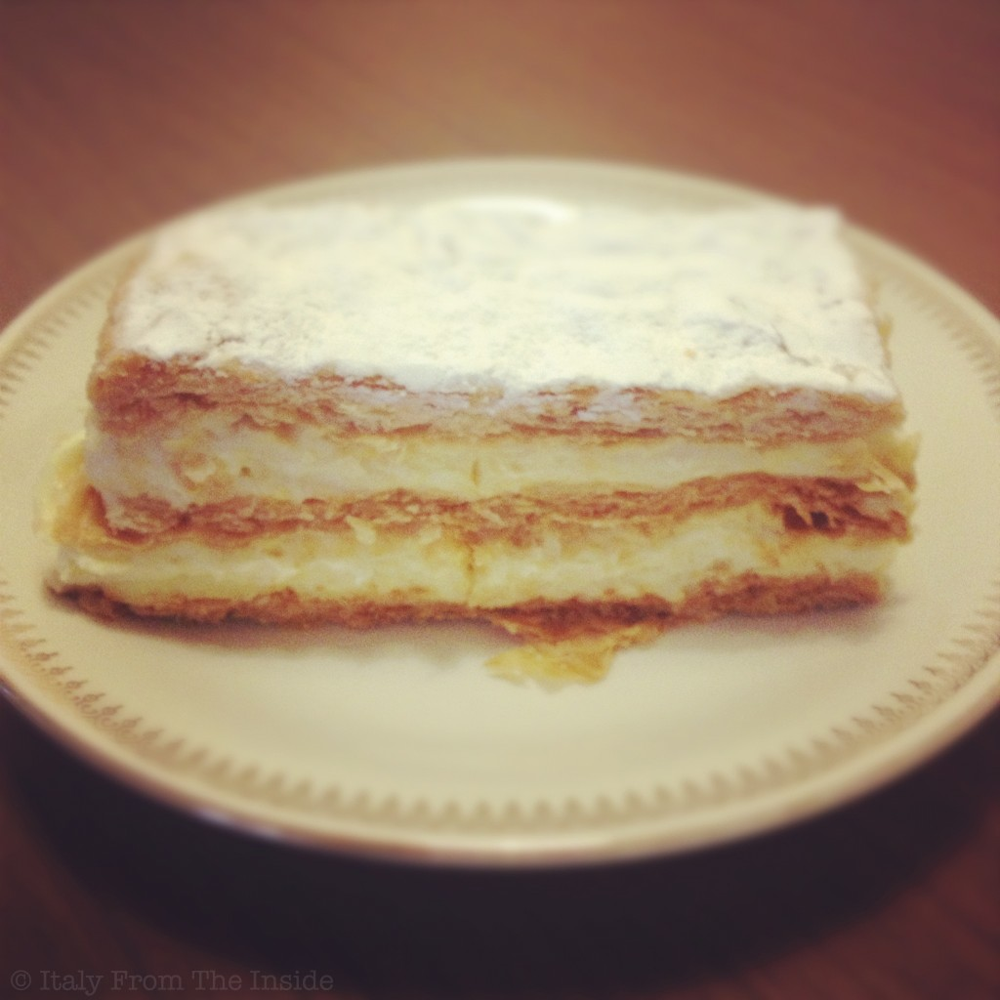

One of the things I miss the most about Italy is la pasticceria, the store that sells sweets and where, as you step in, you start floating one foot above the ground embraced by a delicious fragrance of baked goods. The sfogliatina alla crema that you see above was one of the first sweets I had after arriving in Italy following a long year in the States. I remember I was almost crying for the emotion. The sfogliatina alla crema is one of the simplest Italian desserts: just cream and puff pastry. And yet it is delicious. Fortunately there is an easy way to duplicate it: get one sheet of puff pastry (easily available in the grocery stores), unroll it, place it on a baking sheet, preferably using parchment paper, put it in the preheated oven (350°F) for about 10 minutes or until it has risen and it has a nice, golden color. At that point take it out, immediately cut it in half horizontally, lift the top, spread the custard cream on the bottom, put the top back on, sprinkle it with some powdered sugar, and you get a simplified version of the Italian sfogliatina alla crema.